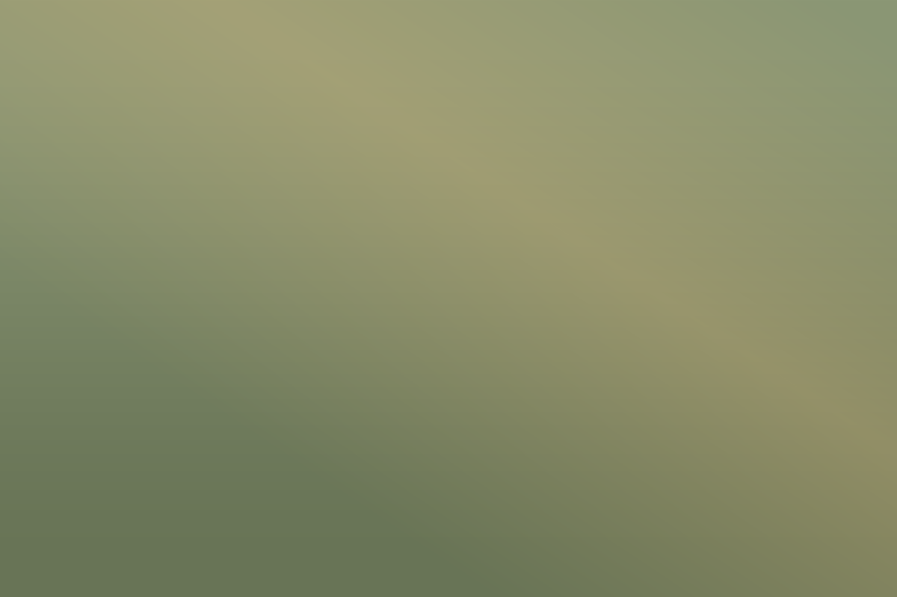

Meetings & retreats
Step away from the office. Field Cottage makes an inspiring private venue for small meetings, team away-days and creative retreats — surrounded by the peace of the Wye Valley.
Where great thinking comes naturally
Sometimes the best ideas arrive when you leave the boardroom behind. With exclusive use of the whole house, two comfortable living spaces, a dining room that doubles as a meeting table and a large garden for breakout sessions, Field Cottage offers a relaxed, distraction-free setting just five minutes from Ross-on-Wye and moments from the M50.
Small gatherings with a big impact
Team away-days
Bring a small team together for planning, strategy or simply reconnecting, away from everyday distractions.
Workshops & training
A calm, private space for workshops, training sessions and creative collaboration with room to spread out.
Creative retreats
Writers, founders and small groups looking for focus and fresh inspiration in a beautiful natural setting.
Board & client meetings
Impress clients or hold a focused board meeting somewhere genuinely memorable and refreshingly different.
Residential meetings
Stay over and make a day of it — with beds for up to eight, evenings can be spent dining together and unwinding.
Celebrations & milestones
Mark a team milestone, launch or small private celebration in a relaxed country-house atmosphere.

Flexible spaces, total privacy
Take over the entire property for the day or longer. The dining room comfortably seats a group around one table, two separate living rooms make natural breakout areas, and the self-contained annexe offers a quiet space for one-to-ones or phone calls.
- Seats up to 10 around the table
- Two breakout living rooms
- Quiet annexe for calls
- Garden for fresh-air sessions
Everything you need to be productive
A well-connected, comfortable base — so you can focus on the day, not the logistics.
- Fast, reliable Wi-Fi
- Large smart TV for presenting
- Tea, coffee & refreshments
- Fully equipped kitchen
- Catering & local caterers on request
- Ample free on-site parking
- Peaceful, private setting
- Optional overnight stays
- Flexible day or multi-day hire
Whiteboards, flip charts and additional AV can usually be arranged in advance — just let us know what your day needs.

Convenient yet a world away
Field Cottage is wonderfully peaceful, yet quick to get to — the M50 is just a few minutes away, with the M5 and the wider motorway network close behind. It's an easy drive from Hereford, Gloucester, Cheltenham, Worcester and South Wales, making it a practical central meeting point for teams travelling from different directions.
- M50 — a few minutes
- Ross-on-Wye — 5 min
- Hereford / Gloucester — ~30 min
- Cheltenham — ~45 min
Enquire about meetings & retreats
Tell us about your group and what you have in mind, and we'll put together a tailored day-delegate or residential proposal.